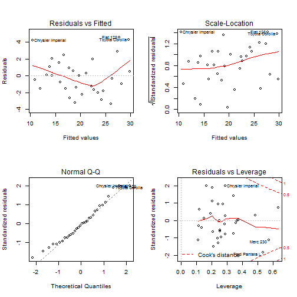

The main purpose of she presentation is to show steps of fitting linear model. The analysis is prepared on mtcars dataset showed on the second slide and the depending variable is mpg. The following slides consists of:
---
## Linear regression - exercise
# Developing data products - projects
The main purpose of she presentation is to show steps of fitting linear model.
The analysis is prepared on _mtcars_ dataset showed on the second slide and the depending variable is _mpg_. The following slides consists of:
- plot with influence of combination of dependent variables on R2
- formula od chosen model - with variables that implies the highest R2 + estimated coefficients
- plots that help to asses goodless of fit to real data
Error in library("leaps"): there is no package called 'leaps'
mpg cyl disp hp drat wt qsec vs am gear carb
Mazda RX4 21.0 6 160.0 110 3.90 2.620 16.46 0 1 4 4
Mazda RX4 Wag 21.0 6 160.0 110 3.90 2.875 17.02 0 1 4 4
Datsun 710 22.8 4 108.0 93 3.85 2.320 18.61 1 1 4 1
Hornet 4 Drive 21.4 6 258.0 110 3.08 3.215 19.44 1 0 3 1
Hornet Sportabout 18.7 8 360.0 175 3.15 3.440 17.02 0 0 3 2
Valiant 18.1 6 225.0 105 2.76 3.460 20.22 1 0 3 1
Duster 360 14.3 8 360.0 245 3.21 3.570 15.84 0 0 3 4
Merc 240D 24.4 4 146.7 62 3.69 3.190 20.00 1 0 4 2
Merc 230 22.8 4 140.8 95 3.92 3.150 22.90 1 0 4 2
Merc 280 19.2 6 167.6 123 3.92 3.440 18.30 1 0 4 4
Merc 280C 17.8 6 167.6 123 3.92 3.440 18.90 1 0 4 4
Merc 450SE 16.4 8 275.8 180 3.07 4.070 17.40 0 0 3 3
Merc 450SL 17.3 8 275.8 180 3.07 3.730 17.60 0 0 3 3
Merc 450SLC 15.2 8 275.8 180 3.07 3.780 18.00 0 0 3 3
Cadillac Fleetwood 10.4 8 472.0 205 2.93 5.250 17.98 0 0 3 4
Lincoln Continental 10.4 8 460.0 215 3.00 5.424 17.82 0 0 3 4
--- .class #id
## mtcars dataset table
```{r, echo=FALSE, warning=FALSE, comment="" }
library("leaps")
dataset <- mtcars
dataset[1:16,]
```
leaps<-regsubsets(mpg ~ ., data=dataset,nbest=10)
## Error in eval(expr, envir, enclos): nie uda3o sie znaleYa funkcji 'regsubsets'
plot(leaps,scale="r2")
## Error in plot(leaps, scale = "r2"): nie znaleziono obiektu 'leaps'
---
## Variable Selection
```{r}
leaps<-regsubsets(mpg ~ ., data=dataset,nbest=10)
plot(leaps,scale="r2")
```
lm(formula = mpg ~ disp + hp + drat + wt + qsec + am + gear +
carb, data = dataset)
(Intercept) disp hp drat wt qsec
9.76827789 0.01214441 -0.02095020 0.87509822 -3.71151106 0.91082822
am gear carb
2.52390094 0.75984464 -0.24796312
---
## Linear model estimation
```{r, echo=FALSE, warning=FALSE, comment=""}
fit <- lm(mpg ~ disp + hp + drat + wt + qsec + am + gear + carb, data=dataset)
fit$call
fit$coefficients
```

---
## Goodness of fit
```{r, echo=FALSE}
layout(matrix(c(1,2,3,4),2,2))
plot(fit)
```
| Linear regression - exercise | 1 |
|---|---|
| mtcars dataset table | 2 |
| Variable Selection | 3 |
| Linear model estimation | 4 |
| Goodness of fit | 5 |
| Table of Contents | t |
|---|---|
| Exposé | ESC |
| Full screen slides | e |
| Presenter View | p |
| Source Files | s |
| Slide Numbers | n |
| Toggle screen blanking | b |
| Show/hide slide context | c |
| Notes | 2 |
| Help | h |